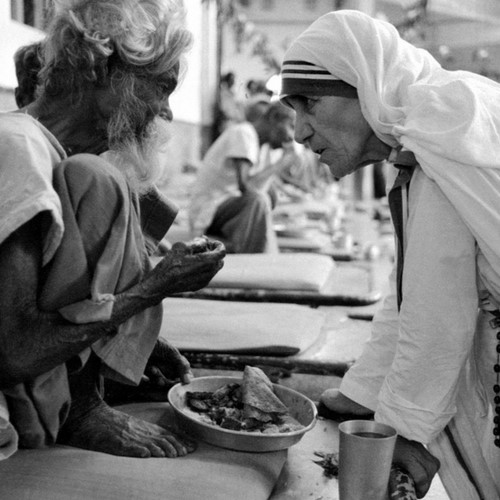
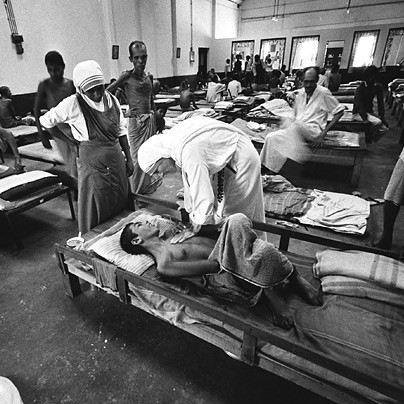

Mary Teresa Bojaxhiu, better known as Mother Teresa or Saint Mother Teresa of Calcutta, was an
Albanian-Indian Catholic nun and the founder of the Missionaries of Charity. She was born
Anjezë Gonxhe Bojaxhiu in Skopje, part of the Ottoman Empire at the time. At the age of 18,
she moved to Ireland and then to India,where she lived most of her life. On 4 September 2016,
she was canonised as Saint Teresa of Calcutta.The anniversary of her death, 5 September,
is her feast day.Mother Teresa founded Missionaries of Charity,a religious congregation,
which grew to have over 4,500 nuns across 133 countries as of 2012.The congregation manages
homes for people who are dying of HIV/AIDS,leprosy, and tuberculosis. The congregation also
runs soup kitchens, dispensaries, mobile clinics, children's and family counselling programmes,
as well as orphanagesand schools. Members take vows of chastity, poverty, and obedience and also
profess a fourth vow: to give "wholehearted free service to the poorest of the poor."Mother Teresa
received several honours,including the 1962 Ramon Magsaysay Peace Prize and the 1979
Nobel Peace Prize.Mother Teresa was admired by many for her charitable work.

ESTABLISHED THE MISSIONARIES OF CHARITY
In 1950, Mother Teresa established the Missionaries of Charity, a Roman Catholic religious congregation. It began as a small community with 12 members in Kolkata, India. It then began to attract recruits and donations; and by the 1960s it had opened hospices, orphanages and leper houses throughout India. In 1965, Pope Paul VI approved Mother Teresa’s request to expand her congregation to other countries. Its first house was opened in Venezuela the same year. By 2012, the Missionaries of Charity had over 4,500 sisters and was active in 133 countries. It continues to care for those who include refugees, former prostitutes, the mentally ill, sick children, abandoned children, lepers, people with AIDS, the aged and convalescent.
OPENED THE KALIGHAT HOME FOR THE DYING
In 1952, Mother Teresa opened her first hospice for the sick, destitute and the dying in Kalighat, Kolkata with help from Indian officials. She did so by seeking permission to use an old abandoned Hindu temple to the goddess Kali. Known as the Kalighat Home for the Dying, the hospice provided medical attention to those in need and it gave people the opportunity to die with dignity in accordance with their faith. In the words of Mother Teresa, it was “for people who lived like animals to die like angels — loved and wanted”.

OPENED NIRMALA SHISHU BHAVAN TO TAKE CARE OF HOMELESS CHILDREN
In 1955, Teresa's Missionaries of Charity opened Nirmala Shishu Bhavan, the Children's Home of the Immaculate Heart. It was their first children’s home which cared for orphans. The center took homeless children and provided them with food, shelter and medical care. When possible, the children were adopted out. Those not adopted were given an education, learned a trade skill and found marriages.
GREATLY HELPED RELIEF EFFORTS FOR PEOPLE SUFFERING WITH LEPROSY
In India, a large number of people were infected with leprosy, a disease that can lead to major disfiguration. Mother Teresa created a Leprosy Fund and a Leprosy Day to help educate the public about leprosy as many people feared the contagious disease. She also established several mobile leper clinics to provide the infected with medicine and bandages near their home. By the mid-1960s, Mother Teresa opened a place where lepers could live and work calling it Shanti Nagar (“The Place of Peace”).

HELPED EVACUATE 37 CHILDREN DURING SIEGE OF BEIRUT
The Siege of Beirut took place in the summer of 1982, as part of the First Lebanon War between Israel and the Palestine Liberation Organization (PLO). At the height of the siege, Mother Teresa helped evacuate 37 retarded and handicapped children from a mental hospital in the Sabra refugee camp. She did so by brokering a temporary cease-fire between the Israeli army and Palestinian guerrillas. Accompanied by Red Cross workers, she then traveled through the war zone to evacuate the young patients. The children were taken to the Spring School in east Beirut, an institution founded by Mother Teresa two years ago.


.svg.png)